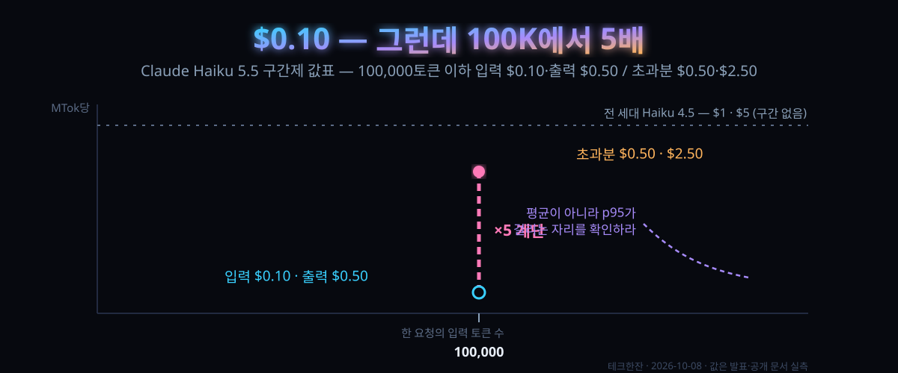

10/7 나온 Haiku 5.5, 입력 $0.10 — 90% 내린 값표에서 100K 토큰을 넘기는 순간 5배 뛰는 함정

값은 실제로 90% 내려갔다. 다만 그 인하는 딱 한 조건이 지켜질 때만 성립한다. 요청 한 건이 100,000토큰을 넘지 않으면. 선을 넘기는 순간 값표는 5배로 되돌아간다.
앤트로픽이 10월 7일(현지) 소형 모델 라인 'Claude Haiku 5.5'를 공개했다. 하루 만에 해커뉴스 표 654, 댓글 327개. 그런데 스레드 초반 열기는 벤치마크가 아니라 값표의 줄눈을 향했다.
저가 구간의 성능이 크게 뛴 건 반길 일이다. 그럼에도 이 글이 '함정'을 앞세우는 이유는 인하 폭이 커서가 아니라, 구간 경계가 비용의 생김새 자체를 갈라놓기 때문이다.
30초 요약
| 항목 | 내용 |
|---|---|
| 무슨 일 | 앤트로픽이 2026년 10월 7일 소형 모델 Claude Haiku 5.5 공개. 자사 발표 기준 '가장 저렴하고 가장 빠르며 가장 유능한 소형 모델' |
| 값의 핵심 | 입력 $0.10 / 출력 $0.50 (100K 토큰 이하). 100K 초과분은 입력 $0.50 / 출력 $2.50. 캐시 읽기는 $0.01. 전 세대 Haiku 4.5는 $1 / $5 단일 구간 |
| 덤으로 온 것 | Sonnet 5.5 캐시 읽기 반값(에이전트 업무 기준 체감 약 20% 인하), Max·Team 가입자에게 월 API 크레딧(Max 5x $100, Max 20x $200) 신규 지급 |
| 성능 (자사 발표) | 지식업무 GDPval-AA v2.1 1,620점(전 세대 735), 컴퓨터 조작 OSWorld 2.1 72.4%, 에이전트 코딩 Terminal-Bench 4.0 39.2% — 경쟁 열로 함께 실린 GPT-6 Luna는 1,437 / 48.9% / 16.4% |
| 속도 | 자사 기준 역대 최속. 공개 첫날 공개 집계 사이트에서 초당 90~131토큰대 관측 (제휴사별 편차, 시점 따라 변동) |
| HN 기류 | '100K 구간 할증이 이상하다', '저가격의 진짜 수혜자는 하네스 운영자', '토크나이저가 바뀌어 같은 텍스트가 최대 30% 더 많은 토큰이 된다 — 총비용이 안 오를 거라 단정 마라' |
| 바로 쓸 것 | 구간 경계까지 포함한 비용 계산식과 4단계 점검표 (본문 3절) |
1. 무엇이 터졌나
값표부터 까뒤집자. 이번 모델의 값은 구간제다. 요청 한 건의 입력 길이가 100,000토큰을 기준으로 갈린다.
| 구간 (한 건의 입력 기준) | 입력 | 출력 | 캐시 읽기 |
|---|---|---|---|
| 100,000토큰 이하 | $0.10 / MTok | $0.50 / MTok | $0.01 / MTok |
| 100,000토큰 초과분 | $0.50 / MTok | $2.50 / MTok | $0.05 / MTok |
| 전 세대 Haiku 4.5 (참고) | $1 / MTok | $5 / MTok | $0.10 / MTok |
'90% 인하'라는 문구의 실체가 여기서 나온다. 100K 이하만 비교하면 입력은 $1에서 $0.10으로, 출력은 $5에서 $0.50으로 나뉜다. 나란히 비교 집계되는 페이지들도 이 값을 그대로 옮겼다. 반대로 100K를 넘는 요청만 두고 보면 인하는 50%에서 멈춘다. 값표에 발가락만 담그면 90% 구간, 몸통을 담그면 50% 구간이다.
같은 발표에 딸려 온 값 관련 소식은 두 가지 더 있다. Sonnet 5.5의 캐시 읽기 값이 반토막 났다. 캐시를 자주 다시 읽는 에이전트 업무의 체감 비용이 평균 20%가량 낮아졌다는 게 회사 설명이다. 그리고 Max·Team 유료 가입자에게 매달 쓰는 API 크레딧이 새로 생겼다. Max 5x는 월 $100, Max 20x는 월 $200. 채팅 구독과 API를 철저히 갈라 팔던 방식에서, 구독자가 자기 서버 자동화에 구독 가치를 얹어 쓸 통로를 열어준 모양새다.
성능은 회사 발표 그대로 옮기면 대담하다는 표현이 아깝지 않다. 소형급이 대형급 아래를 흘깃 보는 수준이 아니라, 한 세대 전 자기네 소형 모델과 경쟁사 저가 모델을 한 번에 정리하는 그림이다. 다만 저 숫자들이 전부 '회사 자가 측정'이라는 사실은 5절에서 다시 꺼낸다.
2. 왜 대단한 논점인가
① 저가 경쟁의 전선이 '성능'에서 '구조'로 옮겨갔다
스레드 초반의 지적은 값의 절대액이 아니었다. 값표의 생김새 자체였다. 경쟁사 저가 모델은 예전부터 $0.10/$0.50대를 써왔으니 가격 신변화가 아니다. 새로운 건 구간을 끊는 방향이 정반대라는 점이다. Haiku는 짧은 요청만 값싸고, 긴 요청은 값이 뛴다. 경쟁 모델은 구간이 넓고 긴 구간에서도 상대적으로 덜 비싸다. 이 값표는 성능이 아니라 용도 분리를 겨냥해 그려진 설계도다. 내 업무가 어느 구간에 놓이는지 확인하는 순간, 값표는 벤치마크보다 쓸모가 많아진다.
② 진짜 표적은 '구독자 개인'이 아니라 하네스 운영자다
월 크레딧 소식이 나오자 값어치 계산보다 '누구를 겨눴나'가 먼저 나왔다. 개인 채팅 구독자에게 $100은 이미 넉넉한 양에 가깝다. 반면 자기 제품에 모델을 붙여 굴리는 개발자에게 API 크레딧은 명백한 원가 절감이고, 크레딧이 API로 나오는 이상 어떤 하네스·프레임워크에서든 쓸 수 있다. 구독을 API 종량제로 돌려쓰게 열어준 건 '우리 도구로 들어오라'보다 '우리 모델로 라우팅하라'에 가깝다. 같은 시기 경쟁사가 반대 방향 카드를 밀고 있다는 점도 댓글창에 함께 걸렸다. 그쪽은 사용자를 자기 로그인 체계 안으로 끌어들이는 형태(앱들이 'OO 계정으로 로그인'을 붙이는 방식)이고, 이쪽은 구독 크레딧을 바깥으로 흘려보낸다. 한 주 안에 서로 거꾸로 된 배포 전략이 나온 셈이니, 이번 싸움의 전장은 모델 성능이 아니라 어디서 굴러가게 만드느냐라는 읽이가 성립한다.
③ 토크나이저 교체라는 숨은 변수
공식 문서 구석에 작게 적힌 항목을 댓글창이 발견해 끌어올렸다. 이번 모델부터는 바뀐 토크나이저를 쓰는데, 같은 입력 텍스트가 전 세대 대비 최대 30%가량 더 많은 토큰으로 쪼개질 수 있다. 값이 90% 내려도 토큰 수가 30% 늘면 실질 인하폭은 명목가보다 쪼그라든다. 구간 할증과 겹치면 더 미묘해진다. 길이가 경계 근처에서 출렁이는 업무라면, 토크나이저 하나 바뀐 것만으로 값표 계단을 넘나들 수 있기 때문이다.
3. 바로 써먹기
이 가격표를 실무에 붙일 때의 핵심은 "100K 이하니까 싸다"가 아니다. "내 요청의 p95가 어디에 걸리나"다. 구간제 값표에서 평균 길이로 예산을 세우면 꼬리 구간의 할증이 예산을 잠식한다.
구간 경계까지 포함한 비용 계산식
# haiku55_cost.py — 100K 구간 경계를 명시적으로 계산하는 골격
IN_M, OUT_M = 0.10, 0.50 # 100K 이하 (USD per MTok)
IN_M_H, OUT_M_H = 0.50, 2.50 # 100K 초과분
def usd(in_tokens: int, out_tokens: int) -> float:
base_in = min(in_tokens, 100_000) * IN_M / 1e6
over_in = max(in_tokens - 100_000, 0) * IN_M_H / 1e6
base_out = min(out_tokens, 100_000) * OUT_M / 1e6
over_out = max(out_tokens - 100_000, 0) * OUT_M_H / 1e6
return base_in + over_in + base_out + over_out
# 호출 전 log: 실제 프롬프트 토큰 수와 응답 길이를 같이 남긴다.
# 평균 대신 p95 길이를 이 함수에 넣어 예산 상한을 잡는다.이번 주 안에 끝내는 4단계 점검
| 단계 | 할 일 | 판정 |
|---|---|---|
| 1. 구간 감지 | 저녁 배치의 입력 길이 분포에서 p95를 구한다 | p95가 100K 아래면 저가 구간 후보. 경계 근처면 컨텍스트 창부터 줄일 것 |
| 2. 토크나이저 환산 | 같은 표본 문서를 새 토크나이저로 재토큰화해 개수 차를 측정 | 30%에 가까우면 값 인하분에서 미리 공제하고 계산 |
| 3. 캐시 편성 | 반복되는 시스템 프롬프트·도구 정의를 캐시 블록으로 고정 | 읽기 값 $0.01은 기본 입력의 10% — 재사용 주기가 2회만 넘어도 이득 |
| 4. 라우팅 분업 | 요약·분류·전처리처럼 정해진 짧은 일만 넘기고, 판단과 최종 편집은 상급 모델 또는 로컬 모델로 남긴다 | 상급 모델 호출 건수가 줄었다는 로그가 확인되면 성공 |
여기에 월 크레딧이 굴러들어 왔다면 시험 운영 창으로 쓰지 않을 이유가 없다. 다만 크레딧에는 별도 이용 조건이 붙어 있으니, 자동화 배치에 얹기 전에 그 조건부터 읽는 편이 안전하다.
4. 해외 반응 쟁점
댓글 327개는 크게 네 갈래로 갈렸다. 요약 표로 둔다.
| 갈래 | 논지 (댓글창 분위기 요약) |
|---|---|
| 저가 구간은 이미 경쟁사가 점유 중 | '100K 이하 구간은 경쟁 모델과 가격이 거의 같아졌다. 값 인하의 최대 수혜는 그동안 저가 구간의 성능 부족을 참으며 쓰던 사용자보다, 이제 막 저가 구간에 들어올 수 있게 된 신규 업무' |
| 구간 할증 반대 | '긴 요청을 더 비싸게 받는 건 컨텍스트 창을 사실상 좁게 파는 것과 같은 신호. 긴 문맥 처리의 원가 구조는 그렇게 가파르지 않다' |
| 속도야말로 진짜 구매 사유 | '실측 초속 90~131토큰대가 유지되면 경쟁 저가 모델 대비 대략 두 배 처리량. 지연에 민감한 라이브 업무에서 선택 이유는 값이 아니라 지연일 것' |
| 총비용 회의론 | '전 세대도 공식적으로는 값이 인하됐지만 토큰 사용량이 늘어서 실질 비용은 올랐다는 후일담이 있었다. 이번에도 토크나이저 교체와 긴 출력 때문에 총비용은 3자 측정이 나올 때까지 미지수' |
한 편으로는 "작은 모델이 자기 한계를 알아채고 상급 모델에 일을 넘겼다"는 후기와, "복합 UI 변환 같은 작업에서는 여전히 한계가 또렷하다"는 반박이 같은 스레드에 나란히 걸려 있다. 저가 소형 모델의 성능 평가가 벤치마크에서 업무 분업 설계로 넘어간 흔적으로 읽힌다.
5. 마시기 전 주의
첫째, 2절에 옮긴 성능 수치는 전부 앤트로픽 자가 발표다. 경쟁사 모델과의 동일 조건 재측정은 이 글이 확인하지 못했다. 발표 표에 경쟁 모델 열로 실린 숫자 역시 회사 쪽 표기다.
둘째, 첫날의 생성 속도 값은 공개 집계 사이트 관측치로, 제공사·시점에 따라 흔들린다. 계약서에 박을 값이 아니라 당분간 참고치로만 두라.
셋째, '토큰이 30% 더 늘 수 있다'는 표현은 공식 문서 기준이며 최대치에 가깝다. 업무 문서의 실제 언어·형식에 따른 편차는 직접 재봐야 한다.
넷째, 구간 경계는 '한 건의 입력 토큰 수'다. 세션 합산이 아니다. 같은 대화를 쪼개 보내면 할증을 피할 수 있는 것처럼 착각하기 쉽지만, 잘게 쪼갤수록 캐시 쓰기와 호출 수가 늘어난다. 위 계산식을 자기 로그에 돌려보고 결론내라.